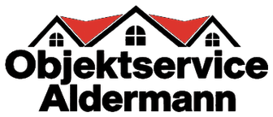

Hat es nachts geschneit oder gefroren, räumen und streuen wir Ihren Weg, bevor die ersten Leute unterwegs sind.
Schnee räumen und streuen auf dem Weg von der Haustür bzw. vom Eingang bis zur Straße. Auf Wunsch auch Zugang zu den Mülltonnen.
Werktags vor 7 Uhr, sonn- und feiertags vor 9 Uhr, so wie es die Räumpflicht verlangt.
Ein fester Preis pro Einsatz, den Sie vorher schriftlich bekommen. Größere Flächen wie Hof, Parkplatz oder Zufahrt schauen wir uns vorher kostenlos an.
Rutscht jemand auf einem nicht geräumten Weg aus, haftet der Eigentümer. Mit festem Winterdienst müssen Sie morgens nicht selbst raus.